Tensile Strength of Reinforcement Bars
Objective:
To determine the mechanical properties of reinforcement bars under tensile testing.
Apparatus Materials:
Universal Testing Machine (UTM), Mechanical extensometer, Vernier Callipers and Marking pen, Measuring Tape


 Specimen
Specimen
Specimen type:
Bars
Calculation of cross-sectional area:
Click on add button to bring bars in the lab. Click on add button to bring measuring tape in the lab. Click on the measuring tape to measure the length of the specimen. 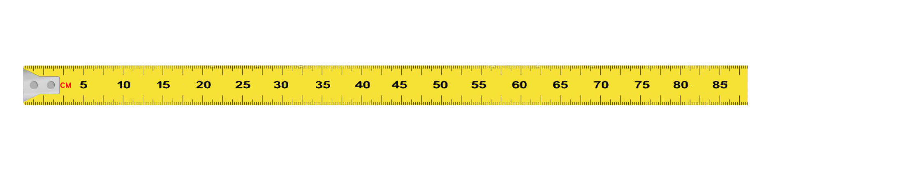
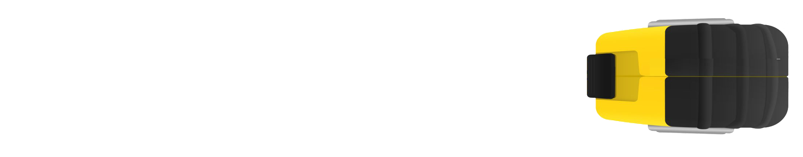
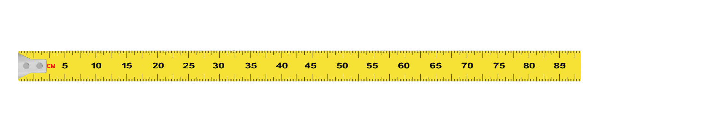
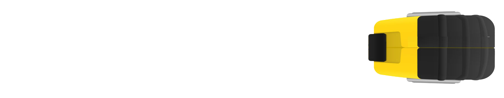
 Total Length (m) = 0.805 m
Total Length (m) = 0.805 m

Calculation of cross-sectional area:
Click on add button to bring weighing machine in the lab. Click on the bar to measure the weight of the specimen. Click on the measuring tape to measure the length of the specimen.


| Total Length (m) | 0.805 |
| Weight (Kg) | 0.698 |
STEP 1
Calculation of cross-sectional area:
Calculate the cross-sectional area of bar using below formula. 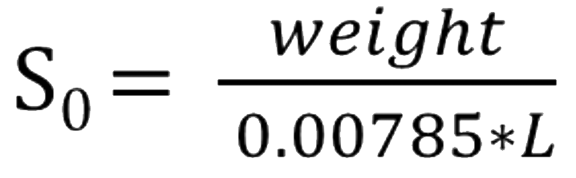 weight (kg) and L (m) 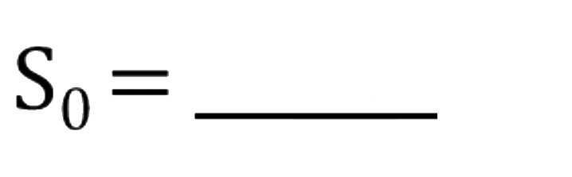 mm2 110.4| Total Length (m) | 0.805 |
| Weight (Kg) | 0.698 |
| Cross-sectional area (mm2) | 110.4 |
STEP 2
Calculation of gauge length:
For proportional Test pieces, original gauge length , So in mm2 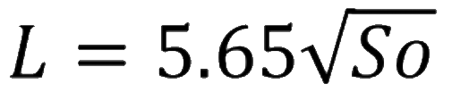 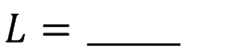 mm 59.4| Total Length (m) | 0.805 |
| Weight (Kg) | 0.698 |
| Cross-sectional area (mm2) | 110.4 |
| Gauge Length (mm) | 59.4 |
STEP 3
Choose gauge length which is rounded to nearest multiple of 5 mm of the original gauge length.
Chosen gauge length Lo = mm| Total Length (m) | 0.805 |
| Weight (Kg) | 0.698 |
| Cross-sectional area (mm2) | 110.4 |
| Gauge Length (mm) | 59.4 |
| Chosen Gauge Length (mm) | 60 |
Mark the specimen at the continuous interval of Lo/2 or Lo/3:
Click on the add button to add marker. Click on the marker to mark the specimen at an interval of Lo/2 = 30 mm.
 30 mm
60 mm
Total Length (m) = 0.805 m
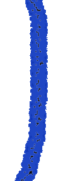
30 mm
60 mm
Total Length (m) = 0.805 m
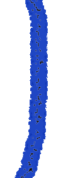
| Total Length (m) | 0.805 |
| Weight (Kg) | 0.698 |
| Cross-sectional area (mm2) | 110.4 |
| Gauge Length (mm) | 59.4 |
| Chosen Gauge Length (mm) | 60 |
Insert the specimen in the UTM such that the load is axially applied on the specimen.
Attach the extensometer to the specimen.
Click on the add button to add rebar. Click on the rebar to insert it on the specimen. Click on the add button to add extensometer. Click on the extensometer to attach it on the specimen.

 50 mm
50 mm(Gauge Length)


Start the Universal Testing Machine
Record simultaneously the readings of load from the UTM and elongation from the extensometer.
Remove the extensometer carefully close to the ultimate strength.
This maximum reading of load in stress strain curve corresponds to the Ultimate load.
Click on the start button to start the UTM. Click on the extensometer to remove it. Click on stop button to stop the UTM. Click on the extensometer to insert it in the UTM.
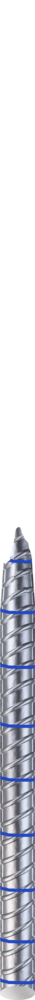
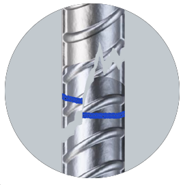
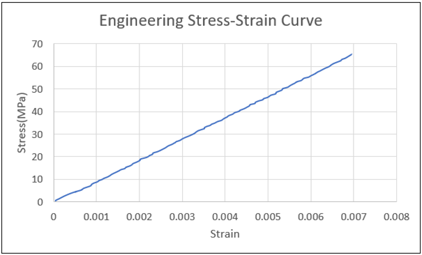
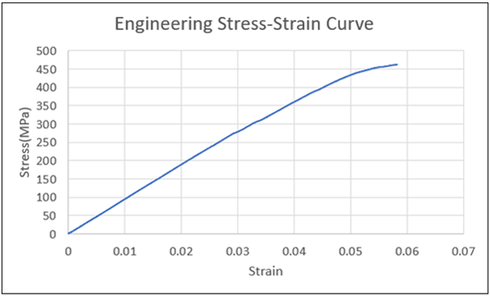
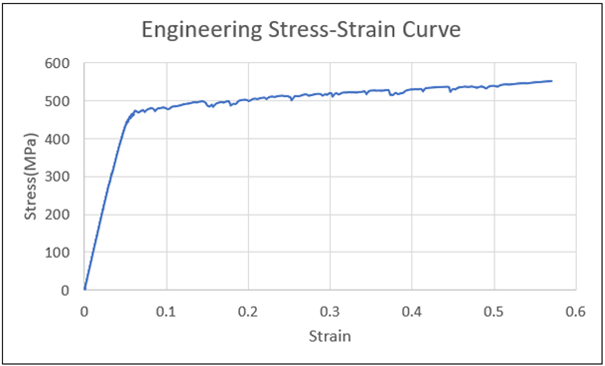
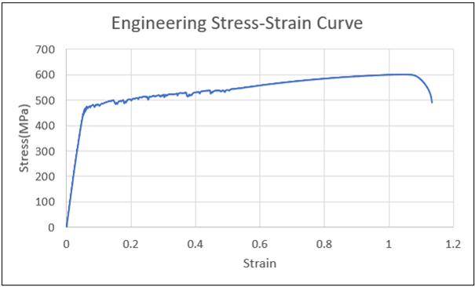
Calculations
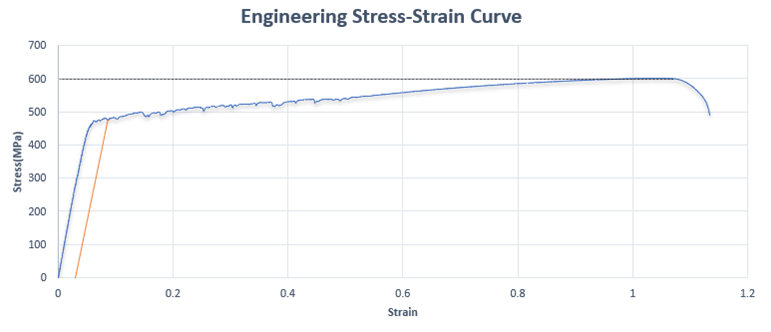
Reading at Yield Point = 480.84 MPa
(From 0.2% offset method)
Reading at Ultimate Strength Point = 600.62 MPa
Fit the two pieces together so that their axes lie in a straight line.
Click on add button to add vernier calliper. Click on the vernier calliper to measure the final gauge length of the specimen. Click on vernier calliper to measure the minimum diameter of the specimen. 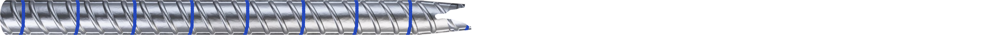 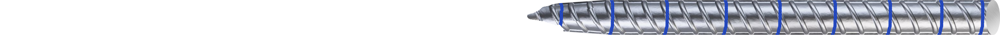 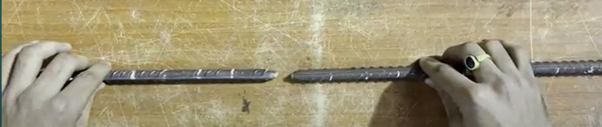 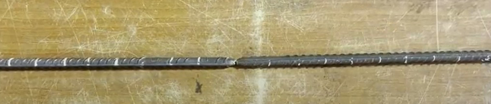


Calculations
| Final gauge length LU | = 77 mm |
| Chosen gauge length Lo | = 60 mm Final |
| Final Diameter min | = 7.1 mm |
Final cross sectional area (Su) = 39.6 mm2
% Elongation after fracture = Lu - Lo Lo × 100 = 77 - 60 ∗ 100 = 28.33 % 60 % Reduction in area = So - Su So × 100 = 110.4 - 39.6 ∗ 100 = 64.13 % 110.4
Results
| Date of test: | |
| Grade of steel: | 550 SD steel |
| Weight of specimen (g) | 698 |
| Length of specimen (mm) | 805 |
| Effective cross-sectional area, So (mm2)= 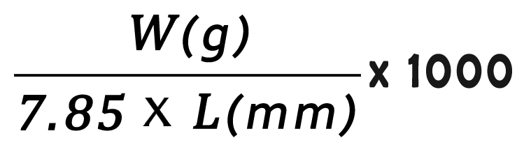 |
110.4 |
| Original gauge length L (mm)= | 59.4 |
| Chosen gauge length, Lo (mm) | 60 |
| Yield Stress (MPa) | 480.84 |
| Tensile Stress (MPa) | 600.62 |
| TS/YS ratio | 1.25 |
| Final gauge length, LU (mm) | 77 |
| Final diameter minimum (mm) | 7.1 |
| % Elongation after fracture | 28.33 |
| % Reduction in area | 64.13 |
Mark the specimen at the continuous interval of Lo/2 or Lo/3:
a) Calculate the cross-sectional area of bar using below formula.| Sample | 1 |
| Length | 1 m |
| Weight | 875.4 |


 71.39 mm
71.39 mm
| Type of Steel | Fe 500 |
| Shape and size of cross section | Deformed circular, 12 mm |
| Specimen no. | 1 | 2 | 3 | Average |
| Weight, w (g) | 875.4 | |||
| Length, L (mm) | 1000 | |||
| Effective cross section area, So = w/7.85L (mm2) | 111.5 | |||
| Effective diameter, d (mm) | 11.92 | |||
| Original Gauge length, Lo* = 5.65√So (mm) | 59.66 | |||
| Chosen Gauge Length, Lo | 60 | |||
| Yield stress (MPa) | 464.6 | |||
| Tensile strength (MPa) | 581.6 | |||
| TS/YS ratio | 1.25 | |||
| Gauge length after fracture, Lu (mm) | 73.29 | |||
| % Elongation after fracture, (Lu-Lo)/Lo×100 | 22.15 |
| Type of Steel | Fe 500 |
| Shape and size of cross section | Deformed circular, 12 mm |
| Specimen no. | 1 | 2 | 3 | Average |
| Weight, w (g) | 875.4 | 879 | ||
| Length, L (mm) | 1000 | 1000 | ||
| Effective cross section area, So = w/7.85L (mm2) | 111.5 | 112.0 | ||
| Effective diameter, d (mm) | 11.92 | 11.94 | ||
| Original Gauge length, Lo* = 5.65√So (mm) | 59.66 | 59.78 | ||
| Chosen Gauge Length, Lo | 60 | 60 | ||
| Yield stress (MPa) | 464.6 | 513.7 | ||
| Tensile strength (MPa) | 581.6 | 602.2 | ||
| TS/YS ratio | 1.25 | 1.17 | ||
| Gauge length after fracture, Lu (mm) | 73.29 | 71.71 | ||
| % Elongation after fracture, (Lu-Lo)/Lo×100 | 22.15 | 19.51 |
| Type of Steel | Fe 500 |
| Shape and size of cross section | Deformed circular, 12 mm |
| Specimen no. | 1 | 2 | 3 | Average |
| Weight, w (g) | 875.4 | 879 | 873 | 875.8 |
| Length, L (mm) | 1000 | 1000 | 1000 | |
| Effective cross section area, So = w/7.85L (mm2) | 111.5 | 112.0 | 111.18 | |
| Effective diameter, d (mm) | 11.92 | 11.94 | 11.89 | 11.92 |
| Original Gauge length, Lo* = 5.65√So (mm) | 59.66 | 59.78 | 59.57 | |
| Chosen Gauge Length, Lo | 60 | 60 | 60 | |
| Yield stress (MPa) | 464.6 | 513.7 | 486.1 | 488.1 |
| Tensile strength (MPa) | 581.6 | 602.2 | 600.4 | 594.7 |
| TS/YS ratio | 1.25 | 1.17 | 1.23 | 1.22 |
| Gauge length after fracture, Lu (mm) | 73.29 | 71.71 | 72.54 | |
| % Elongation after fracture, (Lu-Lo)/Lo×100 | 22.15 | 19.51 | 20.90 | 20.85 |
| Type of Steel | Fe 500 |
| Shape and size of cross section | Deformed circular, 12 mm |
| Specimen no. | 1 | 2 | 3 | Average | Ok/Not ok |
| Weight, w (g) | 875.4 | 879 | 873 | 875.8 | Ok |
| Length, L (mm) | 1000 | 1000 | 1000 | ||
| Effective cross section area, So = w/7.85L (mm2) | 111.5 | 112.0 | 111.18 | ||
| Effective diameter, d (mm) | 11.92 | 11.94 | 11.89 | 11.92 | |
| Original Gauge length, Lo* = 5.65√So (mm) | 59.66 | 59.78 | 59.57 | ||
| Chosen Gauge Length, Lo | 60 | 60 | 60 | ||
| Yield stress (MPa) | 464.6 | 513.7 | 486.1 | 488.1 | Not Ok |
| Tensile strength (MPa) | 581.6 | 602.2 | 600.4 | 594.7 | |
| TS/YS ratio | 1.25 | 1.17 | 1.23 | 1.22 | Ok |
| Gauge length after fracture, Lu (mm) | 73.29 | 71.71 | 72.54 | ||
| % Elongation after fracture, (Lu-Lo)/Lo×100 | 22.15 | 19.51 | 20.90 | 20.85 | Ok |